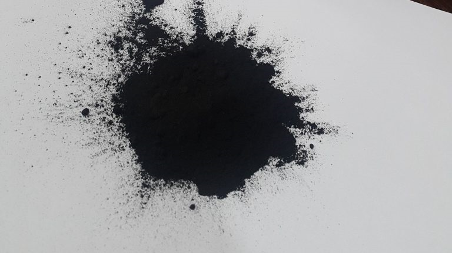

Micronized Gilsonite Powder Overview
Micronized Gilsonite Powder is a finely processed natural hydrocarbon material designed for industrial applications where performance, consistency, and easy dispersion matter. It is produced by grinding Gilsonite into a controlled powder form, typically in the 80 to 400 mesh range, so it can blend smoothly into formulations and deliver reliable results in demanding environments.
What It Is
Micronized Gilsonite powder is a natural asphalt-based product made from Gilsonite, also known as natural bitumen or asphaltum. In powder form, it offers a larger surface area and better dispersibility than lump material, making it easier to use in drilling fluids, asphalt modification, coatings, inks, and other industrial systems. One of its key advantages is its ability to improve adhesion, reduce fluid loss, and enhance the stability of mixtures. Because it is a naturally occurring material with high carbon content and strong binding characteristics, it is valued in applications that require durability and performance under heat, pressure, or chemical stress.
Main Benefits
Micronized Gilsonite powder is popular because it combines natural origin with functional performance. It can improve asphalt resistance to deformation and cracking, support fluid loss control in oilfield drilling, and act as a binder or performance additive in coatings and construction materials. It is also available in different mesh sizes and ash levels, which allows buyers to choose the right grade for their process. According to the product information, common specifications include 80 to 400 mesh with ash content ranging from 0 to 25 percent, giving manufacturers flexibility based on application needs.
Industrial Uses
In asphalt and road construction, micronized Gilsonite helps improve rutting resistance, hardness, and long-term pavement performance. In drilling, it is used as a fluid loss control additive that supports better wellbore stability and helps reduce unwanted filtration into the formation. It is also used in coatings, inks, foundry products, and other specialty industrial formulations where bonding strength, black color, and thermal resistance are useful. Its fine particle size makes it easier to incorporate into blends without major processing issues, which is especially important in high-volume manufacturing.
Why Choose It
For buyers searching for a dependable natural additive, Micronized Gilsonite Powder offers a strong mix of performance, versatility, and cost efficiency. It is a practical choice for manufacturers who want a material that can improve product quality while still being compatible with large-scale industrial production. While our core expertise is bitumen, we also source and supply related commodities like Micronized Gilsonite Powder for verified buyers.
